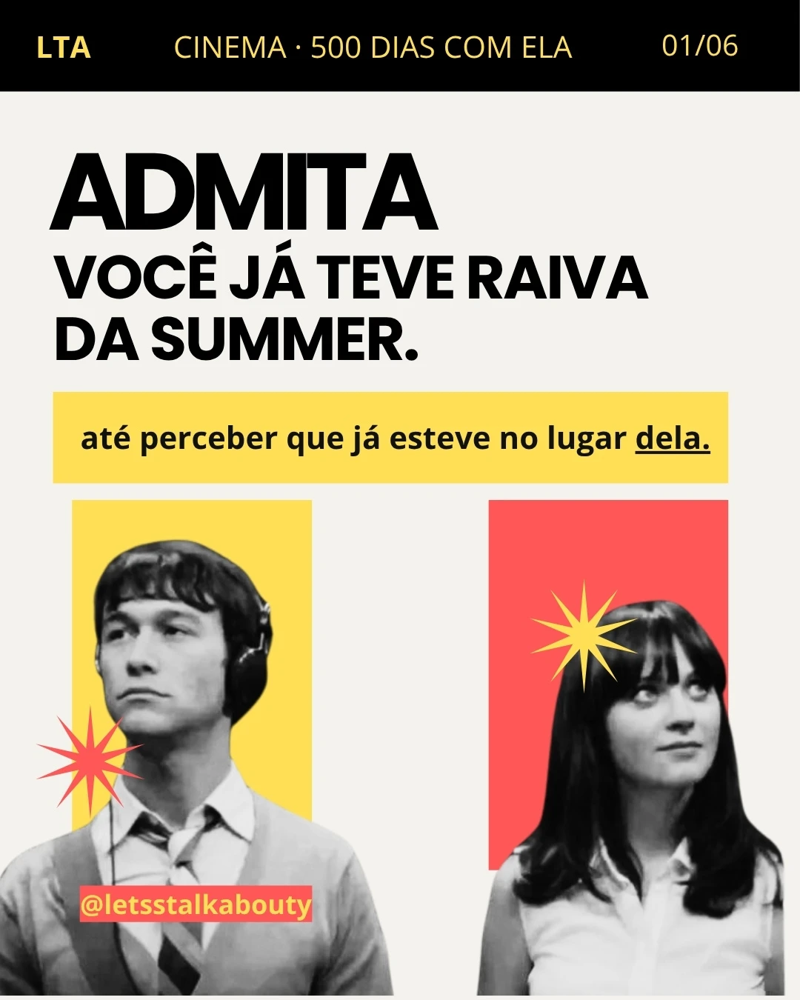
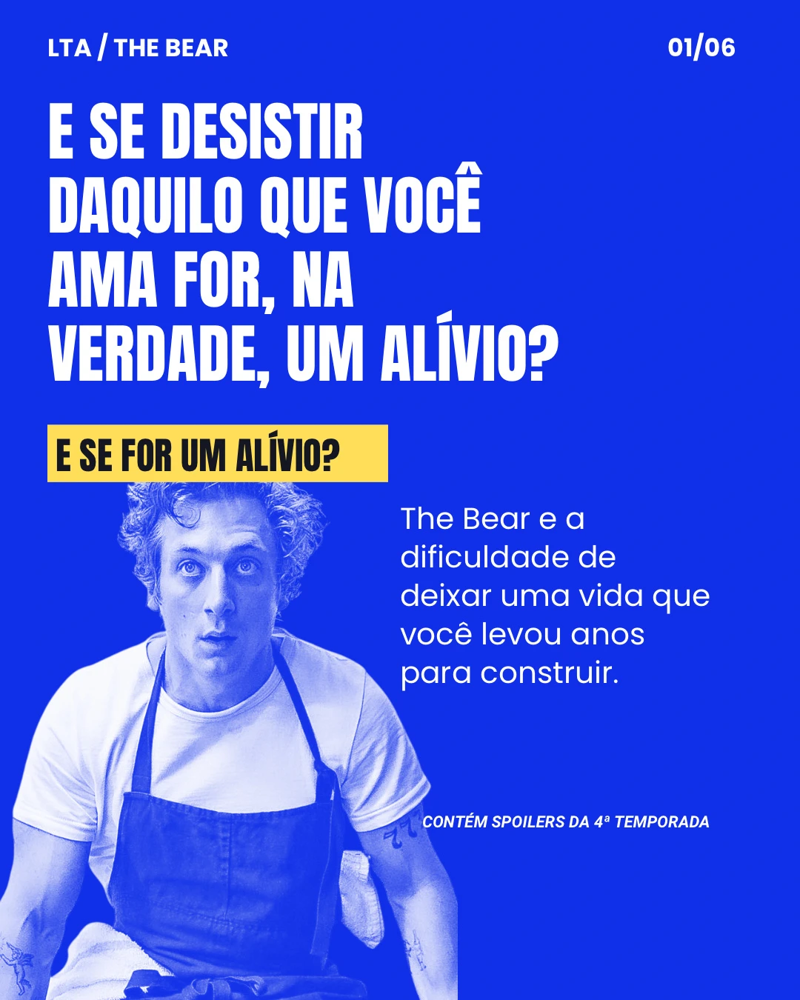
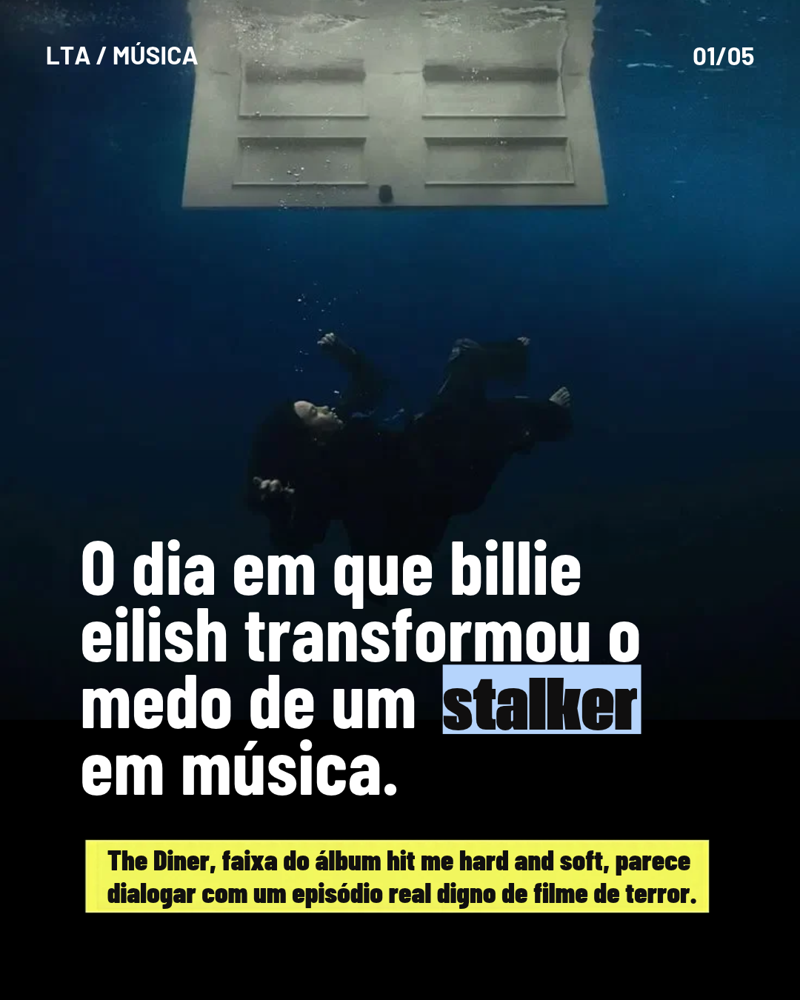
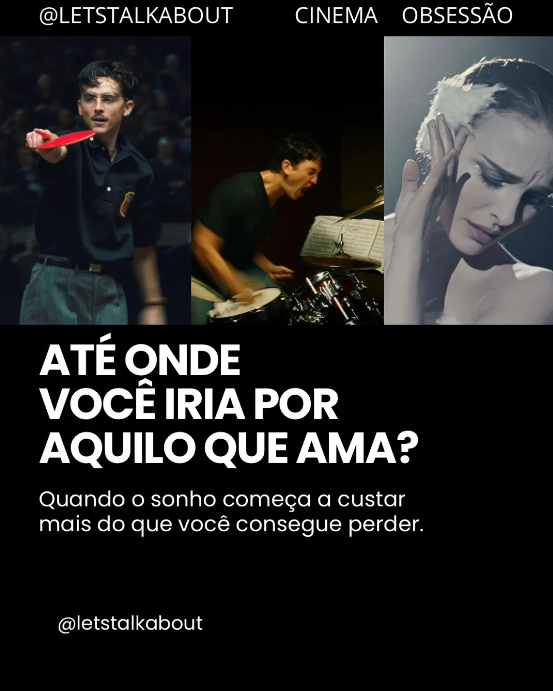
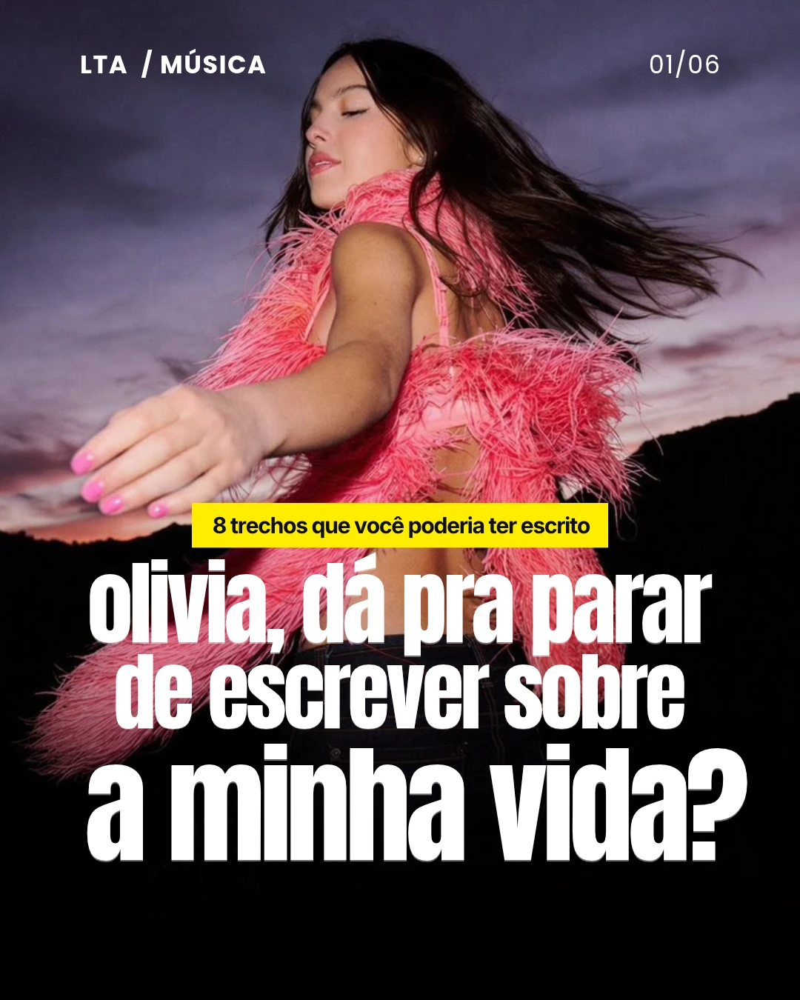
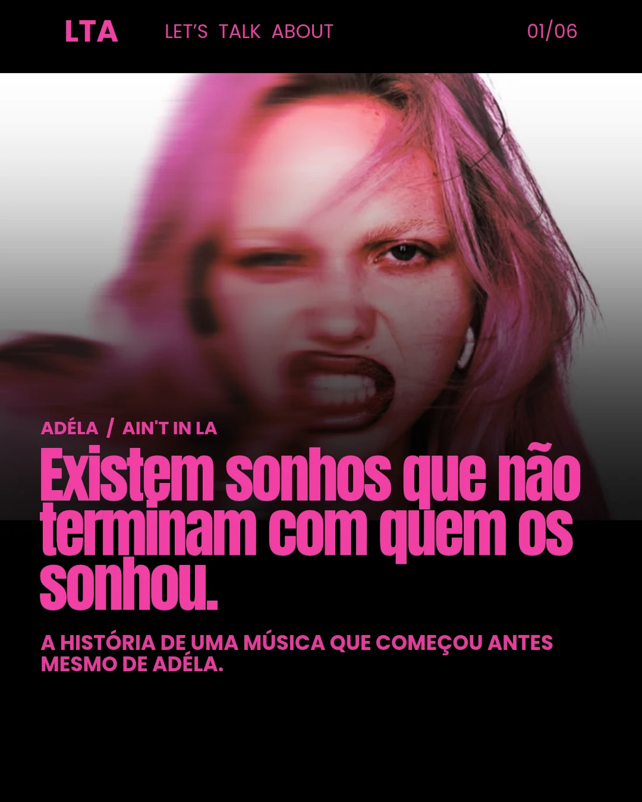

Assuntos culturais e emocionais geram alto engajamento quando tratados com profundidade.
(02) CASE · CONTEÚDO & CULTURA
LET'S TALK ABOUT
Projeto autoral sobre cultura e entretenimento: filmes, séries, música e cultura pop contados como histórias. Dois vídeos viralizaram e somaram 37,8 mil visualizações no TikTok.
A PROPOSTA
Ir além da recomendação: explorar histórias, contextos e significados por trás do que consumimos, criando conversas relevantes e aproximando pessoas através da cultura.
o que eu crio







Passe o mouse para ver cada post.
aprendizados
O público valoriza análises e reflexões, não só conteúdos informativos ou superficiais.
Existe espaço para conversas relevantes sobre filmes, música e cultura pop nas redes.
Conteúdo autoral pode gerar impacto real e construir comunidade.
ai sério q post incrível 😭
Mds q post lindo ❤️